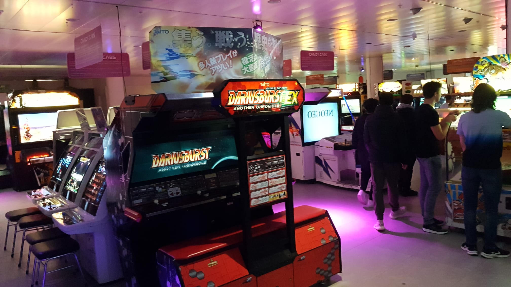
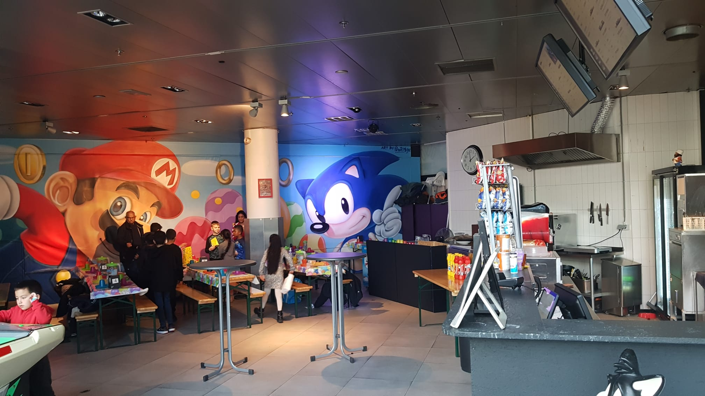
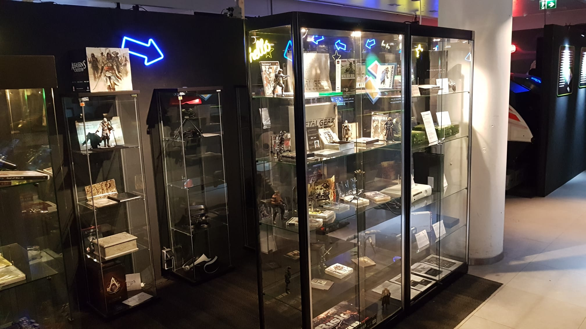

In 2016 kwam Hasan in contact met Jan Kragt, citymarketeer van de gemeente Zoetermeer, die diep onder de indruk van de collectie, het idee opperde om er een museum van te maken en daarvoor een stichting op te richten.
Ter plekke bedachten Hasan en Jan de naam en het Nationaal Videogamemuseum werd geboren.
Samen met een aantal belangrijke spelers uit de Nederlandse game community werd vervolgens stichting Nationaal Videogame Museum in het leven geroepen.
Het gemeentebestuur was enthousiast over het idee en besloot het museum financieel te ondersteunen. Hiermee kon een verwarmde opslag worden gehuurd waar de volledige collectie kon worden ondergebracht en deels worden tentoongesteld.
Begin 2017 werd in nauwe samenwerking met de gemeente een echte museumlocatie gevonden: het voormalige V&D-pand in het stadshart van Zoetermeer.
  